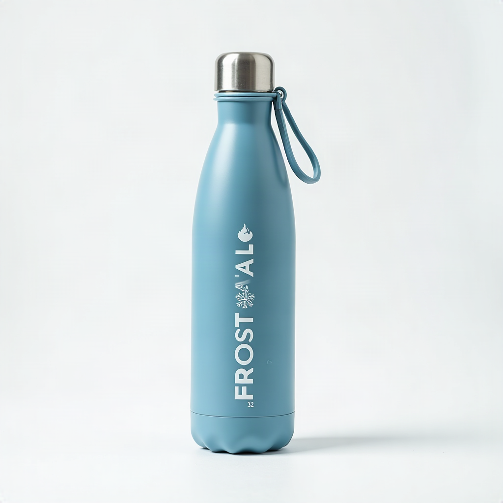

The Frostvale Flow 32 is a 32oz double-wall vacuum-insulated steel bottle that keeps drinks cold for 36 hours and hot for 12. A leakproof flip-straw lid with carry handle, a cupholder-friendly tapered base, and a grippy glacier-blue powder coat make it the bottle that actually keeps up with your day — gym, car, desk, trail, dishwasher, repeat.